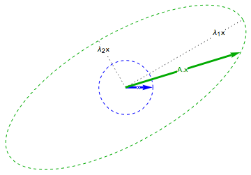
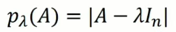
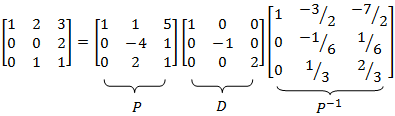

1. Introducción
Venimos trabajando con transformaciones lineales. Lo último que estuvimos planteando fue hallar la matriz de una transformación lineal de \( \mathbb{R}^n \) en \( \mathbb{R}^m \) conocidos \( n \) vectores y sus transformados. En este tema, trabajaremos únicamente con transformaciones lineales de \( \mathbb{R}^n \) en \( \mathbb{R}^n \). Es decir, transformaciones lineales que relacionan vectores de un espacio vectorial con vectores del mismo espacio vectorial.
Para introducir el tema que vamos a estar abordando estas dos semanas, vamos a resolver dos ejemplos como los que mencionamos en el párrafo anterior, pero los datos tienen una particularidad.
En el siguiente video el profesor Martín Ch. halla la matriz de una transformación lineal de \( \mathbb{R}^3 \) en \( \mathbb{R}^3 \) a partir de conocer 3 vectores que forman un conjunto linealmente independiente y los transformados de estos 3 vectores. Los vectores dados tienen la particularidad de que se transforman en múltiplos escalares de sí mismos.
En el ejemplo del video anterior, la matriz de la transformación lineal se consigue haciendo la multiplicación:
\[ \begin{pmatrix} 1 & -2 & 2 \\ 0 & -1 & 5 \\ 2 & 1 & -1 \end{pmatrix} \cdot \begin{pmatrix} 1 & 0 & 0 \\ 0 & 1 & 0 \\ 0 & 0 & -1 \end{pmatrix} \cdot \begin{pmatrix} 1 & -2 & 2 \\ 0 & -1 & 5 \\ 2 & 1 & -1 \end{pmatrix}^{-1} \]
Les dejamos la cuenta para ustedes.
En el siguiente video, trabajamos con un ejemplo similar al video anterior, pero en este caso, lo hacemos con una transformación lineal de \( \mathbb{R}^2 \) en \( \mathbb{R}^2 \).
2. Definición de autovector y de autovalor
A partir de los ejemplos anteriores, y de lo particular que resultó la manera en la que quedó la manera de hallar la matriz de una transformación lineal, cobran sentido las definiciones de autovalor y autovector que el profesor Gastón presenta en el siguiente video:

En el siguiente video, el profesor Gastón nos muestra algunos ejemplos conceptuales de autovalores y autovectores asociados a distintas transformaciones lineales.
3. Una primera propiedad de los autovectores
Dada una transformación lineal \( T \) de \( \mathbb{R}^n \) en \( \mathbb{R}^n \), si el vector \( \vec{v} \) es un autovector de la transformación \( T \) de autovalor asociado \( \lambda \), entonces, cada vector de la recta \( X=\alpha \vec{v} \) es también autovector de \( T \) de autovalor \( \lambda \).
Por ejemplo, en la transformación lineal del ejemplo del segundo video, resulta que el vector \( \begin{pmatrix} -1 \\ 4 \end{pmatrix} \) es autovector de la transformación lineal que allí se trabaja, asociado al autovalor \( 2 \) pues se transforma en el vector \( \begin{pmatrix} -2 \\ 8 \end{pmatrix} \). Según la propiedad que enunciamos en el párrafo anterior, entonces, sucede que cualquier múltiplo del \( \begin{pmatrix} -1 \\ 4 \end{pmatrix} \) es autovector de la transformación. Por ejemplo, el vector \( \begin{pmatrix} -10 \\ -20 \end{pmatrix} \).
4. ¿Cómo hallamos los autovalores y autovectores conocida la matriz de la transformación lineal?
En el siguiente video, el profesor Marcelo da una explicación teórica que responde a la pregunta del título de esta parte.
Los siguientes dos videos corresponden a la parte 1 y a la parte 2, respectivamente, de ejemplos en el que el profesor Marcelo halla los autovectores y los autovalores de una matriz.
5. Diagonalización
Volvemos a los videos del comienzo de este tema. En el video que aparece más abajo, le damos forma a lo que planteamos en los dos videos iniciales.
Previamente, queremos revisar un asunto. Nosotros trabajamos con independencia lineal de vectores. Mencionamos en algún libro anterior que un conjunto de vectores es linealmente independiente si cada uno de los vectores no puede expresarse como combinación lineal de los otros. O de otra manera, un conjunto es linealmente independiente, si el vector nulo, únicamente se consigue como combinación lineal de los vectores del conjunto con escalares todos \( 0 \). También habíamos mencionado que con \( n \) vectores de \( \mathbb{R}^n \) que formen un conjunto linealmente independiente logramos conseguirnos todos los vectores de \( \mathbb{R}^n \), en el sentido de que, cualquier vector de \( \mathbb{R}^n \) es combinación lineal de esos \( n \) vectores. Bien, recordemos que a ese conjunto de \( n \) vectores de \( \mathbb{R}^n \) que forman un conjunto linealmente independiente lo llamamos base del espacio vectorial \( \mathbb{R}^n \). Esto es así pues la base genera al espacio vectorial y, además, es el conjunto con la menor cantidad de vectores que lo hace.
En el siguiente video, el profesor Daniel trabaja con la noción de diagonalización de matrices. Este concepto retoma lo que planteamos en la resolución de los problemas del comienzo. Además, de todas las aplicaciones que tiene, elegimos ahora contar una relacionada con la potencia de matrices.
6. Propiedades de las matrices diagonalizables
Finalmente, mencionamos algunas propiedades de las matrices diagonalizables, los autovectores y los autovalores.
Teorema
Una matriz \( A\in\mathbb{R}^{n\times n} \) es diagonalizable, si y solo si, \( A \) tiene \( n \) autovectores que forman un conjunto linealmente independiente.
Teorema
Si tenemos \( A\in\mathbb{R}^{n\times n} \) tiene asociado \( n \) autovalores reales distintos, entonces, la matriz \( A \) es diagonalizable.
La recíproca de este teorema no es cierta. Es decir, hay matrices diagonalizables que no tienen \( n \) autovalores distintos.
Un ejemplo es la matriz de la transformación lineal del primer video. Si hicieron la cuenta debió quedarles:
\[ \begin{pmatrix} \frac{11}{15} & \frac{2}{3} & \frac{2}{15} \\ \frac{2}{3} & -\frac{2}{3} & -\frac{1}{3} \\ \frac{2}{15} & -\frac{1}{3} & \frac{14}{15} \end{pmatrix} \]
Esta matriz es diagonalizable, y tiene como autovalores únicamente al \( -1 \) y al \( -1 \) . No nos crean, corrobórenlo.
7. Ejercitación y Autoevaluación
Ejercitación
Para ejercitación sobre el tema que trabajamos en este libro, tienen el Listado de ejercicios y problemas para trabajar con autovectores, autovalores y diagonalización. La idea es que los puedan pensar y hacer (si se juntan para hacerlos, mejor) y plantear sus dudas y resoluciones en el foro Consultas y en los momentos presenciales en el aula.
Autoevaluación
Durante la segunda de estas dos semanas tendrán habilitada la Autoevaluación sobre autovectores, autovalores y diagonalización que forma parte de la evaluación continua.